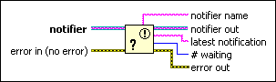

Get Notifier Status Function
Owning Palette: Notifier Operations Functions
Requires: Base Development System
Returns information about the current state of a notifier, such as the last uncancelled notification sent to the notifier.

 Add to the block diagram Add to the block diagram |
 Find on the palette Find on the palette |